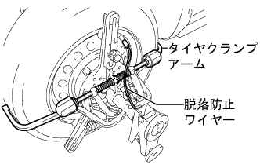
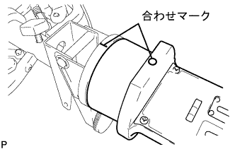
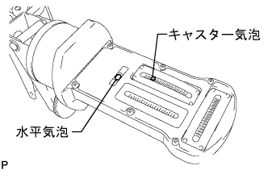
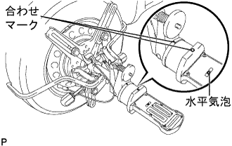
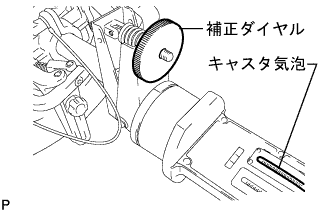

Rear wheel alignment inspection |
| 1. Tire inspection |
| 2. Car high inspection |
| 3. Tour -in inspection |
Shake the vehicle and stabilize the vehicle.
Push the vehicle straight and move forward to move forward.
 |
Make sure the guideline of the toein gauge is adjusted to the rear wheel shaft center height.
The tread center is applied to the rear of each rear wheel tire, and the distance between the marks (B dimensions) is measured.
Press the vehicle slowly to move forward and rotate the rear wheel 180 °.
 |
Measure the distance between the marks (A dimensions) at the front of the rear tire.
Seeking to in.
| 4. Camber inspection |
Take off the wheel cap.
Lift up the vehicle in a flat place.
Attach the SST (tire clamp consumer seta).
Turn the clamp dial of the tire clamp compen seta and expand the clamp arm.
 |
Turn the dial and adjust the two lower claws to the wheel size.
Apply the lower part of the wheel rim to shrink the upper claw according to the wheel rim.
|  |
Turn the clamp dial, shrink the tire clamp arm and attach it to the tire.
Attach the removal prevention wire to the wheel air valve.
Correct the tire clamp compen seta.
Turn the correction dial of the tire clamp compen seta and adjust it within the range of the Mecha Zero line (red line).
 |
Attach the camber caster king pin gauge to the mounting plate of the tire clamp compen seta and match the matching.
|  |
Rotate the wheel a little, match the horizontal bubbles of the camber caster kinging pin in the center, adjust the caster bubbles to 0 ° with the adjusted screw of the camber caster kinging pin.
|  |
Rotate the wheels 180 °, match the combination of the camber caster kinging pin Gauge and the tire clamp compen seta, and adjust the horizontal bubbles.(*1)
|  |
The caster bubbles in the above state are read, and the correction dial of the tire clamp compen seta is turned so that the value is 1/2 of the value.(*2)
|  |
Repeat the procedure (*1) and (*2), and even if the scale of the caster bubbles is 180 ° positively, the set of the camber caster kinging pin is completed if the wheel is 180 ° positively.
Get off the vehicle.
Check the camber.
Remove the camber caster king pin gauge and tire clamp compen seta.
Attach the wheel cap.